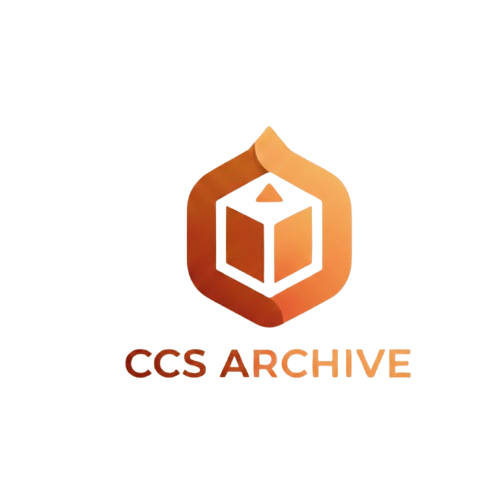

🔍 Search & Retrieve Records
Find documents quickly through searchable metadata, tags, and filtering tools.

CCS Archive SystemA unified archive system for organizing records, improving document retrieval, and supporting secure, role-based workflows across institutional and community operations.
Core capabilities of a complete archive website.
Find documents quickly through searchable metadata, tags, and filtering tools.
Store reports, forms, and files with structured categories for long-term organization.
Track archive usage, document trends, and reporting metrics for better decisions.
Enable quick entry points for community users and mobile-based record navigation.
Define user roles, protect data access, and support accountability through audit-ready flows.
From submission to long-term retention with clear accountability.
Designed to support institutional governance and data privacy requirements.
Usage dashboards and reports can help identify retrieval trends, document volume growth, and review bottlenecks.
Archive operations are aligned with controlled access, protected storage practices, and privacy-conscious record handling.
New users can follow an onboarding flow that covers login, record upload, document search, and approval workflows.
Open “How to Use the Archive” GuideEstablish a modern records portal that supports transparent workflows, fast retrieval, and long-term preservation for academic and community operations.